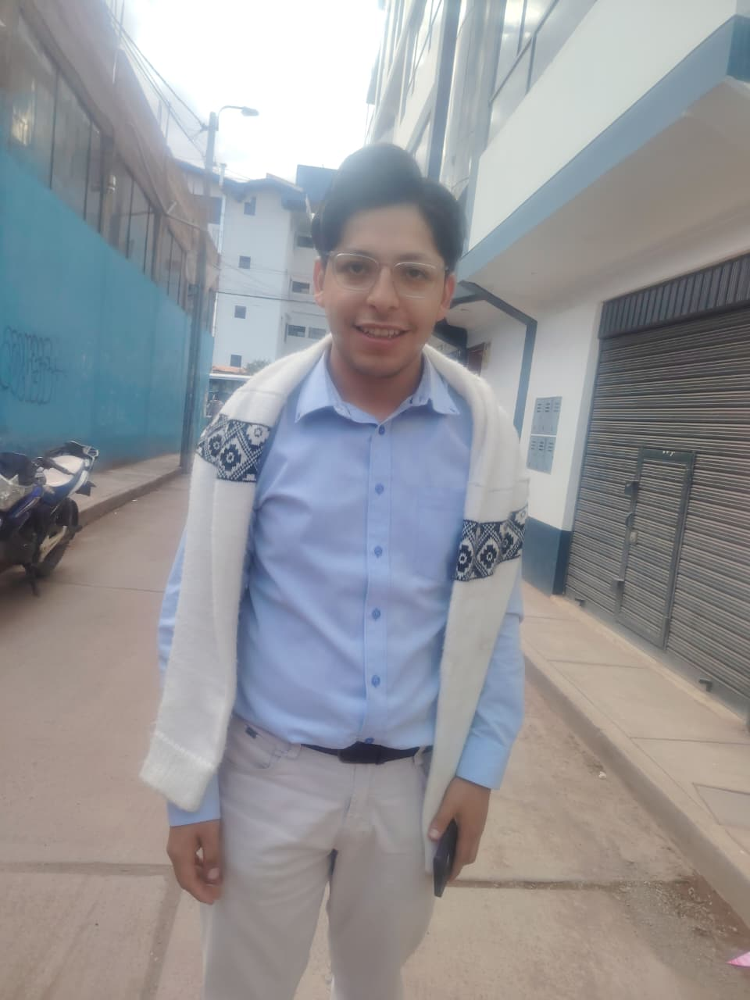
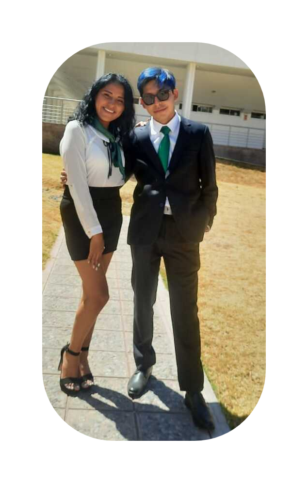

Tecnologías Limpias en los Procesos Industriales
Unidad 1
Tema 1 – Tecnologías Limpias en Procesos Industriales
En estas presentaciones reforcé la idea de que la industria depende de materias primas renovables y no renovables, y que cada operación unitaria (transporte, separación, reacciones químicas) genera residuos y requiere energía. Aprendí que los impactos ambientales están directamente ligados al tipo de operación y que es necesario aplicar tecnologías limpias para reducirlos. También comprendí que la Revolución Industrial marcó el inicio de un consumo acelerado de recursos, y que hoy la sostenibilidad exige innovaciones tecnológicas que integren eficiencia energética y reducción de emisiones. Este trabajo me permitió entender que la industria debe incorporar tecnologías limpias en cada etapa para optimizar consumo, disminuir emisiones y hacer procesos más competitivos.
Línea de Tiempo Química y Petroquímica – Primer trabajo grupal del Grupo 4
Este documento me permitió visualizar la evolución histórica de la industria química y petroquímica. Desde procesos artesanales como la metalurgia y fermentación, pasando por hitos como el proceso Leblanc y el proceso Solvay, hasta la expansión petroquímica del siglo XX con plásticos y fertilizantes. Aprendí que la falta de regulación ambiental en los primeros siglos generó graves impactos en agua, aire y suelo. En la actualidad, la tendencia es hacia la química verde, la nanotecnología y la digitalización (Industria 4.0). Me llamó la atención el caso peruano de la Refinería de Talara, que con la tecnología Flexicoking logró producir combustibles más limpios, y el caso internacional de BASF con el sistema Verbund, que integra procesos para reducir residuos y energía.
📝 Evidencias de Aprendizaje
👥 Trabajo Grupal no disponibleTema 2 (PL2) – Tecnologías Limpias en Procesos Industriales II
Este tema profundiza en cómo la industria puede cerrar ciclos productivos reutilizando materiales, reduciendo la generación de desechos y aplicando soluciones de eficiencia energética. Aprendí que cada operación unitaria produce residuos y consume energía, y que la elección de tecnologías limpias reduce impactos ambientales y costos operativos. El foco está en innovar para lograr procesos más sostenibles sin sacrificar la productividad.
PL3 – Diagramas de Flujo de Procesos
Este documento me enseñó que los diagramas de flujo de procesos (PFD) son herramientas clave para documentar, analizar y comunicar procesos industriales. Identifiqué sus beneficios: mejoran la comprensión, estandarizan procedimientos, permiten detectar ineficiencias y facilitan la colaboración entre diferentes roles. Aprendí que los símbolos estandarizados (ISO 10628, ANSI, DIN) son fundamentales para representar equipos, tuberías, válvulas y condiciones operativas. Comprendí que estos diagramas no son solo dibujos, sino documentos técnicos que permiten planificar, construir, operar y mantener una planta de manera eficiente.
PL4 – Análisis del Ciclo de Vida (ACV)
El ACV me permitió entender que se trata de una metodología que evalúa impactos ambientales desde la extracción de materias primas hasta la disposición final. Aprendí que sus fases son: definición de objetivo y alcance, inventario, evaluación de impacto e interpretación. Identifiqué categorías de impacto como calentamiento global, acidificación, eutrofización y agotamiento de recursos. El ejemplo de la producción de papel me mostró cómo se cuantifican emisiones y consumos en cada etapa. Concluí que el ACV es esencial para políticas públicas, ecodiseño y gestión ambiental empresarial.
PL5 – Producción Más Limpia
La lectura sobre Producción Más Limpia (PML) me ayudó a comprender que es una estrategia preventiva que busca reducir residuos desde el origen, a diferencia de las tecnologías convencionales de “final de tubo”. Aprendí que la PML se desarrolló internacionalmente con la EPA en Estados Unidos y el PNUMA en Europa, y que en Colombia se convirtió en política nacional. Lo más relevante es que la PML no debe verse como un gasto, sino como una inversión que mejora la eficiencia, reduce costos y fortalece la competitividad empresarial. Entendí que su aplicación implica optimizar procesos, ahorrar materias primas y energía, y disminuir la generación de residuos peligrosos.
Taller n° 1 – Producción de Lubricantes (Grupo 4)
En el análisis de la producción de lubricantes, identifiqué que el proceso parte de fracciones pesadas del petróleo y utiliza energía calórica, vapor y electricidad. Reconocí problemas técnicos como fugas de vapor, separación ineficiente y operación compensatoria eléctrica. Estos eventos generan pérdidas energéticas, emisiones de CO₂ y COVs, además de reprocesos que aumentan el consumo total de energía. Lo más importante fue entender que la raíz del problema está en la ineficiencia térmica y el reproceso, lo que incrementa la huella ambiental de la planta. Este taller me permitió relacionar directamente los impactos ambientales con fallas técnicas y operativas.
📝 Evidencias de Aprendizaje
👥 Trabajo Grupal no disponibleTaller n° 2 – Diagrama de Flujo Flexicoking (Grupo 4)
En el trabajo sobre Flexicoking aprendí que esta tecnología, desarrollada por ExxonMobil y aplicada en la Nueva Refinería Talara, convierte residuos pesados del petróleo en productos de mayor valor como gasolina, diésel, GLP y flexigas. Me quedó claro que el proceso combina craqueo térmico y gasificación, lo que permite aprovechar mejor la energía y reducir la generación de coque sólido. Sin embargo, también identifiqué impactos ambientales como emisiones de CO₂ y presencia de H₂S, que requieren sistemas de tratamiento. Comparado con el FCC, el Flexicoking trabaja con fracciones más pesadas y mejora la eficiencia energética de la refinería. Concluí que es una tecnología clave para reducir residuos finales y cumplir estándares modernos de combustibles limpios.
📝 Evidencias de Aprendizaje
👥 Trabajo Grupal no disponibleNorma ISO 10628 – Diagramas de Flujo de Procesos
Al revisar la norma ISO 10628 entendí que los diagramas de flujo son una herramienta fundamental para representar procesos industriales de manera clara y estandarizada. Aprendí que existen tres tipos principales: el diagrama de bloques, el diagrama de flujo de proceso (PFD) y el diagrama de tuberías e instrumentación (P&ID). Cada uno tiene un nivel distinto de detalle y sirve para diferentes etapas de diseño y operación. Lo que más me llamó la atención es que la norma establece reglas precisas sobre grosores de líneas, inscripciones, símbolos y disposición de equipos, lo que garantiza uniformidad y facilita la comunicación entre ingenieros, operadores y técnicos. Comprendí que estos diagramas no solo son dibujos, sino documentos técnicos que permiten planificar, construir, operar y mantener una planta de manera eficiente.
Lectura PML – Producción Más Limpia
Este documento reforzó que la PML busca integrar la sostenibilidad en procesos, productos y servicios. Aprendí que sus ventajas incluyen ahorro de materias primas y energía, innovación tecnológica y reducción de riesgos ambientales. Vi cómo se aplica en Perú mediante Acuerdos de Producción Limpia, y comprendí que la PML es una estrategia continua que aumenta la eficiencia total y reduce riesgos para los seres humanos y el ambiente.
Responsabilidad Social 1 – Tecnologías Limpias
El trabajo de Responsabilidad Social me recordó que aplicar tecnologías limpias no solo es un compromiso ambiental, sino también social. Aprendí que las empresas deben asumir responsabilidad frente a la comunidad, integrando sostenibilidad en su gestión y promoviendo beneficios colectivos. Este documento me ayudó a relacionar la ingeniería ambiental con la ética empresarial y la responsabilidad social.
📝 Evidencias de Aprendizaje
👥 Trabajo Grupal no disponibleUnidad investigativa formativa – Análisis de ciclo de vida comparativo de prendas textiles: producción de algodón en Perú frente a manufactura en China
Esta unidad investigativa formativa consolida los aprendizajes en tecnologías limpias, diagramas de flujo, ciclo de vida y responsabilidad social. Refuerza el trabajo académico con un enfoque en propuestas ambientales aplicadas y en la investigación como herramienta de mejora continua.
📝 Evidencias de Aprendizaje
👥 Trabajo Grupal (PDF)Unidad 2
Contenido de Unidad 2 próximamente.

Unidad 3
Contenido de Unidad 3 próximamente.
